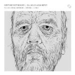
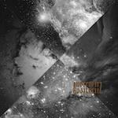

Music Reviews
-
Devon Sproule I Love You, Go Easy
An inconsistent, if original, batch of folk songs.
Andrew Davison reviews... -

Lady Gaga Born This Way
Somewhere, in a country manor, surrounded by frayed Kabbalah wristbands, other people's children and unsold copies of her Sex book, Madonna is listening to this and seething.
Joe Rivers wasn't born this way. He used to be a lot shorter... -

Bill Wells & Aidan Moffat Everything's Getting Older
Aidan Moffat (debauched raconteur of Arab Strap fame) teams up with Bill Wells (experimental jazz bassist/pianist) for a truly life-affirming album. Moffat hurled abuse at the author of a lukewarm review of this record over Twitter...
Luckily Stephen Wragg is more positive... -
.jpg)
Arctic Monkeys Suck It And See
The Monkeys return with their fourth studio album, Suck It And See. And they would like to invite you on a journey in their quickening canoe to the hellcat spangled cavern by the damsel-patterned alley underneath the pussyfooting, setting sun as it drops out the sky of black treacle... obviously.
This is a link to the review - click it and see... -

Negura Bunget Focul Viu
This double live album by the cult Romanian black metal band celebrates their native country's wilderness and mythology.
Sam Redlark dons his wolf-skin boots... -
David Bazan Strange Negotiations
The latest from the famously ex-Christian Bazan avoids pitfalls without much grace, but with ruthless efficiency.
Matt Montgomery reviews... -

Austerlitz Austerlitz
Like pretty much every other Parisian band of the moment, Austerlitz have a fine selection of vintage synths in their arsenal. Shame that they're lacking in the effortless charm and melodic abilities exhibited by most of their contemporaries though.
Mark Davison was hoping for more in the way of gallic charm... -

Efrim Manuel Menuck Plays "High Gospel"
Godspeed You! Black Emperor and Silver Mt. Zion founder member Efrim Manuel Menuck has released his first solo album. And, despite the subject of his recent fatherhood popping up in the lyrics (and on the cover) he still seems to be as miserable as he ever was.
Mark Davison isn't quite ready to preach the gospel according to Efrim... -
Albany Down South Of The City
South Of The City capitalises on one of the most clichéd genres in music by fattening it up with yet more cliché and serving with a large dollop of Duffy.
Joel Stanier wants his 45 minutes back... -
My Morning Jacket Circuital
Is the sixth album from these Kentucky natives a return to form or will their "evil urges" take over?
David Hogg reviews...